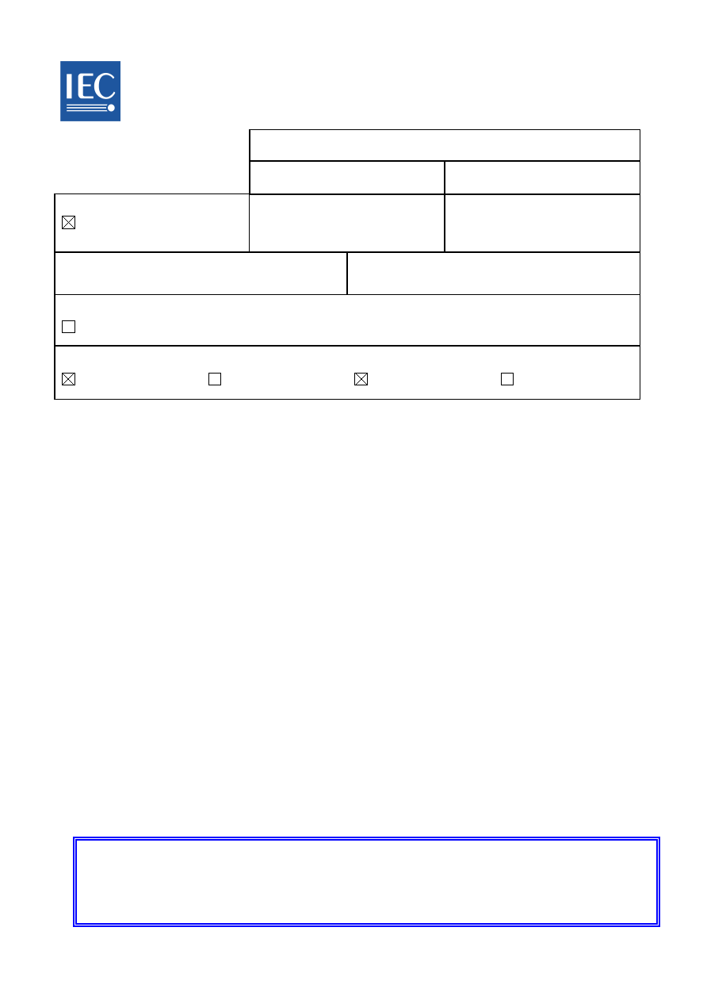
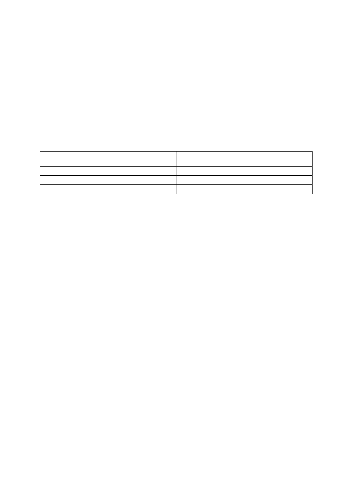
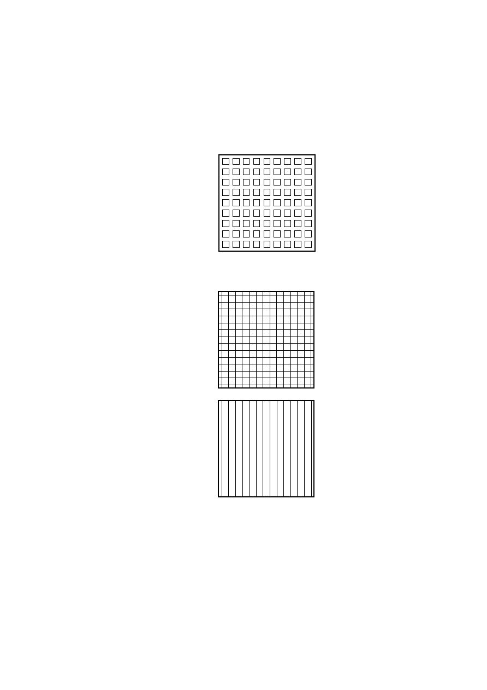
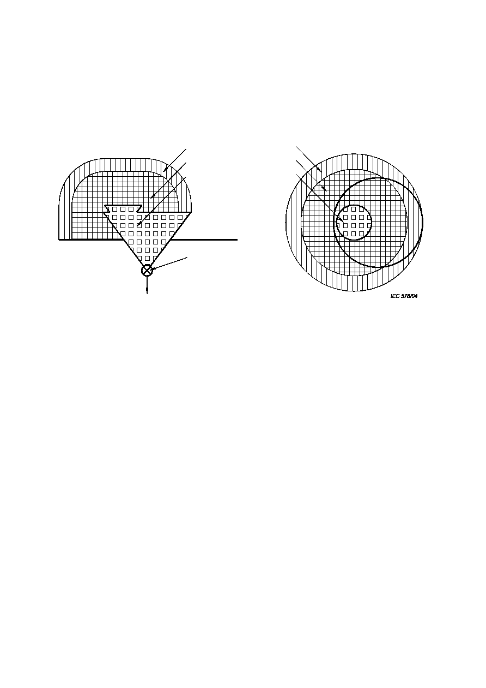
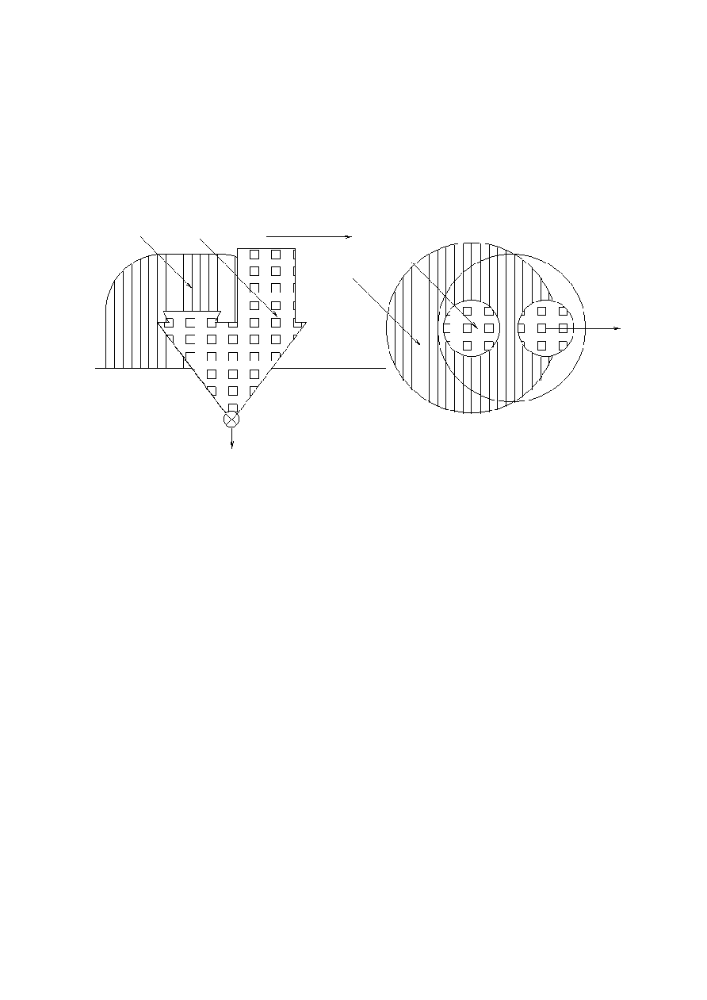
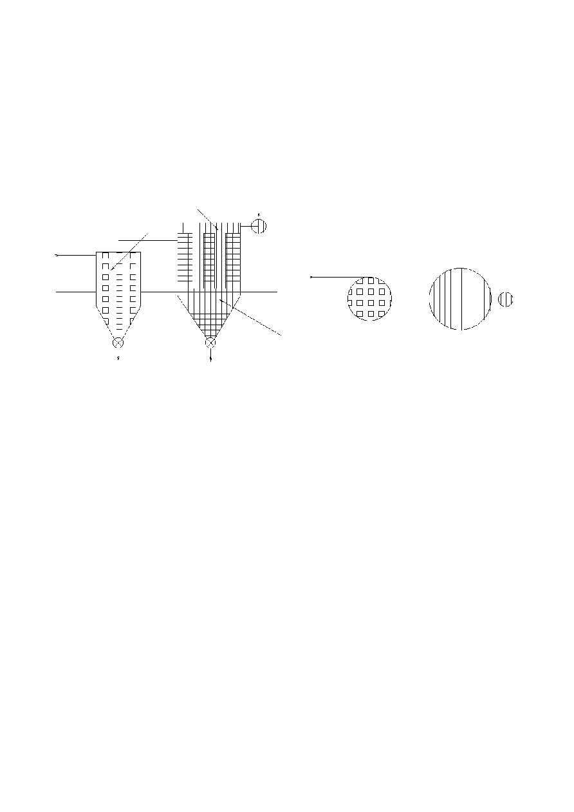
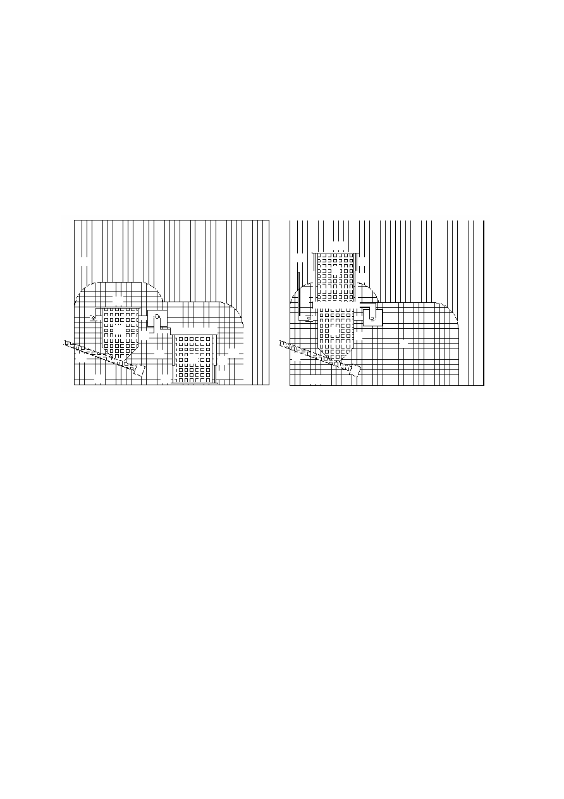

FORM CDV (IEC)
2009-01-09
® Registered trademark of the International Electrotechnical Commission
31J/226/CDV
COMMITTEE DRAFT FOR VOTE (CDV)
PROJET DE COMITÉ POUR VOTE (CDV)
Project number
IEC 60079-10-2/Ed2
Numéro de projet
IEC/TC or SC:
SC 31J
CEI/CE ou SC:
Secretariat / Secrétariat
HR
Submitted for parallel voting in
CENELEC
Soumis au vote parallèle au
CENELEC
Date of circulation
Date de diffusion
2013-11-22
Closing date for voting (Voting
mandatory for P-members)
Date de clôture du vote (Vote
obligatoire pour les membres (P))
2014-02-28
Also of interest to the following committees
Intéresse également les comités suivants
TC 18
Supersedes document
Remplace le document
31J/210/CD and 31J/218A/CC
Proposed horizontal standard
Norme horizontale suggérée
Other TC/SCs are requested to indicate their interest, if any, in this CDV to the TC/SC secretary
Les autres CE/SC sont requis d'indiquer leur intérêt, si nécessaire, dans ce CDV à l'intention du secrétaire du CE/SC
Functions concerned
Fonctions concernées
Safety
Sécurité
EMC
CEM
Environment
Environnement
Quality assurance
Assurance qualité
CE DOCUMENT EST TOUJOURS À L'ÉTUDE ET SUSCEPTIBLE DE
MODIFICATION. IL NE PEUT SERVIR DE RÉFÉRENCE.
LES RÉCIPIENDAIRES DU PRÉSENT DOCUMENT SONT INVITÉS À
PRÉSENTER, AVEC LEURS OBSERVATIONS, LA NOTIFICATION DES
DROITS DE PROPRIÉTÉ DONT ILS AURAIENT ÉVENTUELLEMENT
CONNAISSANCE ET À FOURNIR UNE DOCUMENTATION EXPLICATIVE.
THIS DOCUMENT IS STILL UNDER STUDY AND SUBJECT TO CHANGE. IT
SHOULD NOT BE USED FOR REFERENCE PURPOSES.
RECIPIENTS OF THIS DOCUMENT ARE INVITED TO SUBMIT, WITH THEIR
COMMENTS, NOTIFICATION OF ANY RELEVANT PATENT RIGHTS OF
WHICH THEY ARE AWARE AND TO PROVIDE SUPPORTING
DOCUMENTATION.
Title :
IEC 60079-10-2 Ed. 2.0: Explosive atmospheres Part 10-2: Classification of areas
Combustible dust atmospheres
Introductory note
ATTENTION
IEC CENELEC
PARALLEL VOTING
The attention of IEC National Committees, members of CENELEC, is drawn to the fact that this Committee Draft for Vote
(CDV) for an International Standard is submitted for parallel voting.
The CENELEC members are invited to vote through the CENELEC online voting system.
Copyright © 2013 International Electrotechnical Commission, IEC. All rights reserved. It is
permitted to download this electronic file, to make a copy and to print out the content for the sole
purpose of preparing National Committee positions. You may not copy or "mirror" the file or
printed version of the document, or any part of it, for any other purpose without permission in
writing from IEC.
®

2
60079-10-2/Ed2/CDV © IEC(E)
CONTENTS
1
CONTENTS ............................................................................................................................ 2
2
FOREWORD ........................................................................................................................... 3
3
INTRODUCTION ..................................................................................................................... 5
4
1
Scope ............................................................................................................................... 6
5
2
Normative references ....................................................................................................... 7
6
3
Terms and definitions ....................................................................................................... 7
7
4
Area classification .......................................................................................................... 10
8
4.1
General ..................................................................................................... 10
9
4.2
Area classification procedure for explosive dust atmospheres.................... 11
10
4.3
Competency of personnel .......................................................................... 12
11
5
Sources of release.......................................................................................................... 12
12
5.1
General ..................................................................................................... 12
13
5.2
Dust containment ....................................................................................... 12
14
5.3
Identification and grading of sources of release ......................................... 13
15
6
Zones ............................................................................................................................. 13
16
6.1
General ..................................................................................................... 13
17
6.2
Extent of zones .......................................................................................... 13
18
6.2.1
General ..................................................................................................... 13
19
6.2.2
Zone 20 ..................................................................................................... 14
20
6.2.3
Zone 21 ..................................................................................................... 14
21
6.2.4
Zone 22 ..................................................................................................... 14
22
7
Dust layer hazard ........................................................................................................... 15
23
8
Documentation ............................................................................................................... 15
24
8.1
General ..................................................................................................... 15
25
8.2
Drawings, data sheets and tables .............................................................. 16
26
8.2.1
Preferred Symbol key for area classification zones .................................... 17
27
Annex A (informative) Area classification examples ............................................................. 18
28
Annex B (informative) Housekeeping ................................................................................... 24
29
Annex C (informative) Hybrid Mixtures ................................................................................. 26
30
31
Figure 1
Identification of zones on drawings....................................................................... 17
32
Figure A.1
Bag emptying station within a building and without exhaust ventilation .............. 20
33
Figure A.2
Bag emptying station with exhaust ventilation ................................................... 21
34
Figure A.3
Cyclone and filter with clean outlet outside building .......................................... 22
35
Figure A.4
Drum tipper within a building without exhaust ventilation ................................... 23
36
37
Table 1
Designation of zones depending on presence of dust ............................................ 15
38
39
40

60079-10-2/Ed2/CDV © IEC(E)
3
INTERNATIONAL ELECTROTECHNICAL COMMISSION
41
___________
42
43
EXPLOSIVE ATMOSPHERES
44
45
Part 10-2: Classification of areas
46
Combustible dust atmospheres
47
48
49
FOREWORD
50
1) The International Electrotechnical Commission (IEC) is a worl dwide organization for standardization comprising
51
all national electrotechnical committees (IEC National Committees). The object of IEC is to promote
52
international co-operation on all questions concerning standardization in the electrical and electronic fi elds. To
53
this end and in addition to other activities, IEC publishes International Standards, Technical Specifications,
54
Technical Reports, Publicly Available Specifications (PAS) and Guides (hereafter referred to as "IEC
55
Publication(s)"). Their preparation
is entrusted to technical committees; any IEC National Committee interested
56
in the subject dealt with may participate in this preparatory work. International, governmental and non -
57
governmental organizations liaising with the IEC also participate in this p reparation. IEC collaborates closely
58
with the International Organization for Standardization (ISO) in accordance with conditions determined by
59
agreement between the two organizations.
60
2) The formal decisions or agreements of IEC on technical matters expres s, as nearly as possible, an international
61
consensus of opinion on the relevant subjects since each technical committee has representation from all
62
interested IEC National Committees.
63
3) IEC Publications have the form of recommendations for international u se and are accepted by IEC National
64
Committees in that sense. While all reasonable efforts are made to ensure that the technical content of IEC
65
Publications is accurate, IEC cannot be held responsible for the way in which they are used or for any
66
misinterpretation by any end user.
67
4) In order to promote international uniformity, IEC National Committees undertake to apply IEC Publications
68
transparently to the maximum extent possible in their national and regional publications. Any divergence
69
between any IEC Publication and the corresponding national or regional publication shall be clearly indicated in
70
the latter.
71
5) IEC itself does not provide any attestation of conformity. Independent certification bodies provide conformity
72
assessment services and, in some areas, access to IEC marks of conformity. IEC is not responsible for any
73
services carried out by independent certification bodies.
74
6) All users should ensure that they have the latest edition of this publication.
75
7) No liability shall attach to IEC or its directors, employees, servants or agents including individual experts and
76
members of its technical committees and IEC National Committees for any personal injury, property damage or
77
other damage of any nature whatsoever, whether direct or indirect, or for costs (including legal fees) and
78
expenses arising out of the publication, use of, or reliance upon, this IEC Publication or any other IEC
79
Publications.
80
8) Attention is drawn to the Normative references cited in this publication. Use of the referenced publications is
81
indispensable for the correct application of this publication.
82
9) Attention is drawn to the possibility that some of the elements of this IEC Publication may be the subject of
83
patent rights. IEC shall not be held responsible for identifying any or all such patent rights.
84
International Standard IEC 60079-10-2 has been prepared by subcommittee 31J:
85
Classification of hazardous areas and installation requirements, of IEC technical committee
86
31: Equipment for explosive atmospheres.
87
This second edition of IEC 60079-10-2 cancels and replaces the first edition of IEC 60079-10-
88
2 published in 2009. This edition constitutes a technical revision.
89
The significant technical changes with respect to the first edition of IEC 60079-10-2 are as
90
follows:
91
92
4
60079-10-2/Ed2/CDV © IEC(E)
The text of this standard is based on the following documents:
93
FDIS
Report on voting
31J/xxx/FDIS
31J/xxx/RVD
94
Full information on the voting for the approval of this standard can be found in the report on
95
voting indicated in the above table.
96
This publication has been drafted in accordance with the ISO/IEC Directives, Part 2.
97
A list of all parts of the IEC 60079 series, under the general title Explosive atmospheres, can
98
be found on the IEC website.
99
The committee has decided that the contents of this publication will remain unchanged until
100
the stability date indicated on the IEC web site under "http://webstore.iec.ch" in the data
101
related to the specific publication. At this date, the publication will be
102
reconfirmed,
103
withdrawn,
104
replaced by a revised edition, or
105
amended.
106
107
The National Committees are requested to note that for this publication the stability date
108
is 2019
109
THIS TEXT IS INCLUDED FOR THE INFORMATION OF THE NATIONAL COMMITTEES AND WILL BE
110
DELETED AT THE PUBLICATION STAGE
.
111
112
113
114
60079-10-2/Ed2/CDV © IEC(E)
5
INTRODUCTION
115
Dusts, as defined in this standard, are hazardous because when they are dispersed in air by
116
any means they may form potentially explosive atmospheres. Furthermore, layers of dust may
117
ignite and act as ignition sources for an explosive atmosphere.
118
This part of IEC 60079 gives guidance on the identification and classification of areas where
119
such hazards from dust can arise. It sets out the essential criteria against which the ignition
120
hazards can be assessed and gives guidance on the design and control parameters which can
121
be used in order to reduce such a hazard. General and special criteria are given for the
122
process of identification and classification of hazardous areas.
123
This standard contains an informative Annex A giving examples for classifying areas.
124
125

6
60079-10-2/Ed2/CDV © IEC(E)
EXPLOSIVE ATMOSPHERES
126
127
Part 10-2: Classification of areas
128
Combustible dust atmospheres
129
130
131
132
1 Scope
133
This part of IEC 60079 is concerned with the identification and classification of areas where
134
explosive dust atmospheres and combustible dust layers are present, in order to permit the
135
proper assessment of ignition sources in such areas.
136
In this standard, explosive dust atmospheres and combustible dust layers are treated
137
separately. In Clause 4, area classification for explosive dusts clouds is described, with dust
138
layers acting as one of the possible sources of release. In Clause 7, the hazard of dust layer
139
ignition is described.
140
The examples in this standard are based on a system of effective housekeeping being
141
implemented in the plant to prevent dust layers from accumulating. Where effective
142
housekeeping is not present, the area classification includes the possible formation of
143
explosive dust clouds from dust layers.
144
The principles of this standard can also be followed when combustible fibres or flyings may
145
cause a hazard.
146
This standard is intended to be applied where there can be a risk due to the presence of
147
explosive dust atmospheres or combustible dust layers under normal atmospheric conditions.
148
It does not apply to
149
underground mining areas,
150
dusts of explosives that do not require atmospheric oxygen for combustion pyrophoric substances,
151
propellants, pyrotechnics, munitions, peroxides, oxidizers, water-reactive elements or compounds,
152
or other similar materials.
153
154
catastrophic failures which are beyond the concept of abnormality dealt with in this
155
standard,
156
any risk arising from an emission of toxic gas from the dust.
157
This standard does not apply to where a hazard may arise due to the presence of flammable
158
gas or vapour, but the principles may be used in the assessment of a hybrid mixture. (refer
159
also IEC 60079-10-1)
160
NOTE Additional guidance on hybrid mixtures is provided in Annex C.
161
This standard does not take into account the effects of consequential damage following a fire
162
or an explosion.
163

60079-10-2/Ed2/CDV © IEC(E)
7
2 Normative references
164
The following referenced documents are indispensable for the application of this document.
165
For dated references, only the edition cited applies. For undated references, the latest edition
166
of the referenced document (including any amendments) applies.
167
IEC 60079-0, Explosive Atmospheres
Part 0: Equipment
General requirements
168
IEC 60079-10-1, Explosive Atmospheres
Part 10-1: Classification of areas - Explosive gas
169
atmospheres
170
ISO/IEC 80079-20-2, Explosive Atmospheres
Part 20-2: Material Characteristics
171
Combustible dusts test methods
(in progress, stage of completion to be considered before
172
publication of this document)
173
3 Terms and definitions
174
For the purposes of this document, terms and definitions given in IEC 60079-0 and the
175
following apply.
176
NOTE Additional definitions applicable to explosive atmospheres can be found in IEC 60050-426.
177
3.1
178
area
179
three-dimensional region or space
180
3.2
181
atmospheric conditions
182
(surrounding conditions)
183
conditions that include variations in pressure and temperature above and below reference
184
levels of 101,3 kPa (1 013 mbar) and 20 °C (293 K), provided that the variations have a
185
negligible effect on the explosive properties of th e combustible dust
186
3.3
187
hybrid mixture
188
mixture of a flammable gas or vapour with a dust
189
3.4
190
dust
191
generic term including both combustible dust and combustible flyings
192
3.5
193
combustible dust
194
finely divided solid particles, 500
m or less in nominal size, which may form an explosive
195
mixture with air at atmospheric pressure and normal temperatures
196
NOTE 1 This includes dust and grit as defined in ISO 4225.
197
NOTE 2 The term solid particles is intended to address particles in the solid phase and not the gaseous or liquid
198
phase, but does not preclude a hollow particle.
199
NOTE 3 Materials passing a U.S. No. 40 Standard sieve as defined in ASTM E 11
-
04 are considered to meet the
200
500 µm criterion.
201
NOTE 4 Combustible dust test methods can be found in ISO/ IEC 80079-20-2.
202

8
60079-10-2/Ed2/CDV © IEC(E)
3.6
203
explosive dust atmosphere
204
mixture with air, under atmospheric conditions, of flammable substances in the form of dust,
205
which, after ignition, permits self-sustaining propagation
206
3.7
207
conductive dust
208
combustible dust with electrical resistivity equal to or less than
10
3
m
209
NOTE Conductive dust is classified as Group IIIC
210
211
3.8
212
non-conductive dust
213
combustible dust with electrical resistivity greater than
10
3
m
214
NOTE Non-conductive dust is classified as Group IIIB
215
216
3.9
217
combustible flyings
218
solid particles including fibers, greater than 500
m in nominal size, which may form an
219
explosive mixture with air at atmospheric pressure and normal temperatures
220
NOTE 1 Examples of flyings include rayon, cotton (including cotton linters and cotton waste) sisal, jute, hemp,
221
cocoa fiber, okum and baled waste kapok.
222
NOTE 2 Combustible flyings are classified as Group IIIA
223
224
3.10
225
hazardous area (dust)
226
area in which combustible dust, in the form of a cloud is present, or may be expected to be
227
present, in quantities such as to require special precautions for the construction, installation
228
and use of equipment
229
NOTE 1
Hazardous areas are divided into zones based upon the frequency and duration of the occurrence of
230
explosive dust atmospheres (see 6.2 and 6.3).
231
NOTE 2 The potential of creating an explosive dust cloud from a dust layer also needs to be considered.
232
3.11
233
non-hazardous area (dust)
234
an area in which combustible dust in the form of a cloud is not expected to be present in
235
quantities such as to require special precautions for the construction, insta llation and use of
236
equipment
237
3.12
238
dust containment
239
process equipment housing which is intended to handle, process, transport or store materials
240
inside of it, while minimizing the risk of the release of dust to the surrounding atmosphere
241
3.13
242
source of dust release
243
point or location from which dust may be released into the atmosphere
244
NOTE The source of dust release can be from a dust containment or from a dust layer.
245

60079-10-2/Ed2/CDV © IEC(E)
9
246
3.14
247
continuous grade of release
248
release which is continuous or is expected to occur frequently or for long periods
249
3.15
250
primary grade of release
251
release which can be expected to occur periodically or occasionally during normal operation
252
3.16
253
secondary grade of release
254
release which is not expected to occur in normal operation and, if it does occur, is likely to d o
255
so only infrequently and for short periods
256
3.17
257
extent of zone
258
distance in any direction from the edge of a source of release to the point where the hazard
259
associated with the release is considered to exist no longer
260
3.18
261
normal operation
262
operation of equipment conforming electrically and mechanically with its design specification
263
and used within the limits specified by the manufacturer
264
NOTE Minor releases of dust which may form a cloud or layer (e.g. releases from filters) can be part of normal
265
operation.
266
3.19
267
abnormal operation
268
process-linked malfunctions that occur infrequently
269
3.20
270
catastrophic failure
271
an occurrence which exceeds the design parameters of the process plant and control system
272
resulting in major release of flammable material
273
NOTE Catastrophic failure in this context is applied, for example, to the rupture of a storage silo or a pneumatic
274
conveyor.
275
3.21
276
equipment (for explosive atmospheres)
277
general term including apparatus, fittings, devices, components, and the like used as a part
278
of, or in connection with, an installation in an explosive atmosphere
279
3.22
280
ignition temperature of a dust layer
281
lowest temperature of a surface at which ignition occurs in a dust on the surface
282
NOTE The ignition temperature of a dust layer may be determined by the test method given in ISO/IEC 80079-20-
283
2.
Check on publication of 80079-20-2 before publication
284
3.23
285
ignition temperature of a dust cloud
286
lowest temperature of the hot inner wall of a furnace at which ignition occurs in a dust cloud in
287
air contained therein
288

10
60079-10-2/Ed2/CDV © IEC(E)
NOTE The ignition temperature of a dust cloud may be determined by the test method given in ISO/IEC 80079-20-
289
2.
Check on publication of 80079-20-2 before publication
290
3.24
291
verification dossier
292
set of documents showing the compliance of electrical equipment and installations
293
NOTE
Requirements for a `verification dossier' are given in
IEC 60079-14.
294
3.25 zones
295
3.25.1 zone 20
296
A place in which an explosive dust atmosphere, in the form of a cloud of dust in air, is p resent
297
continuously, or for long periods or frequently.
298
3.25.2 zone 21
299
A place in which an explosive dust atmosphere, in the form of a cloud of dust in air, is likely to
300
occur in normal operation occasionally.
301
3.25.3 zone 22
302
area in which an explosive dust atmosphere, in the form of a cloud of combustible dust in air,
303
is not likely to occur in normal operation but, if it does occur, will persist for a short period
304
only.
305
NOTE The potential of creating an explosive dust cloud from a dust layer also needs to be considered
306
4 Area classification
307
4.1
General
308
This standard adopts the concept, similar to that used for flammable gases and vapour, of
309
using area classification to give an assessment of the likelihood of an explosive dust
310
atmosphere occurring.
311
Dusts form explosive atmospheres only at concentrations within the explosion range. Although
312
a cloud with a very high concentration may not be explosive, the danger nevertheless exists
313
that, should the concentration fall, it may enter the explosive range. Depending on the
314
circumstances, not every source of release will necessarily produce an explosive dust
315
atmosphere.
316
Dusts that are not removed by mechanical extraction or ventilation, settle out at a rate
317
depending on properties, such as particle size, into layers or accumulations. It shall be taken
318
into account that a dilute or small continuous source of release, in time, is able to produce a
319
potentially hazardous dust layer.
320
The hazards presented by dusts are as follows:
321
the formation of a dust cloud from any source of release, incl uding a layer or
322
accumulation, to form an explosive dust atmosphere (see Clause 5);
323
the formation of dust layers, which are not likely to form a dust cloud, but may ignite due
324
to self-heating or exposure to hot surfaces or thermal flux and cause a fire hazard or over-
325
heating of equipment. The ignited layer may also act as an ignition source for an explosive
326
atmosphere (see Clause 7).
327
Since explosive dust clouds and dust layers may exist, any sour ce of ignition should be
328
avoided.
329

60079-10-2/Ed2/CDV © IEC(E)
11
NOTE 1 If the source of ignition cannot be avoided, then measures should be taken to reduce the likelihood of
330
dust and/or ignition sources so that the likelihood of coincidence is so small as to make the risk negligible.
331
NOTE 2 In some cases, where the risk of explosion cannot be completely avoided, it can be necessary to employ
332
some form of explosion protection such as explosion venting, explosion suppression or explosion isolation.
333
Subsequent to the completion of the area classification, a risk assessment may be carried out
334
to assess whether the consequences of ignition of an explosive atmosphere requires the use
335
of equipment of a higher equipment protection level (EPL) or may justify the use of equipment
336
with a lower equipment protection level than normally required. Whether or not a risk
337
assessment is performed, the EPL requirements should be recorded on the area classification
338
drawings to allow proper selection of equipment.
339
Whether or not a risk assessment is performed, the EPL requirements should be recorded on
340
the area classification drawings to allow proper selection of equipment.
341
NOTE In this standard, explosive dust atmospheres and dust layers are treated separately. In this clause, area
342
classification for explosive dust clouds is described, with dust layers acting as one of the possible sources of
343
release. The hazard of dust layer ignition is described in Clause 7.
344
4.2
Area classification procedure for explosive dust atmospheres
345
Area classification is based on a number of factors and may require informed i nput from a
346
number of sources. These factors include:
347
Whether the dust is combustible or not. Dust combustibility can be confirmed by laboratory
348
tests to ISO/IEC 80079-20-2.
Check on publication
349
Material characteristics for the dusts that are present. These may be obtained from a
350
variety of published sources, a process specialist or by testing. Characteristics that are
351
obtained from published sources should be validated for the particular application, since
352
there are often significant variations in dust characteristic values from one data source to
353
another.
354
Nature of dust releases from particular process sources. Specialist engineering knowledge
355
may be required for this information.
356
Operational and maintenance procedures for the plant, including housekeeping.
357
Other equipment and safety information.
358
Close co-operation is necessary from specialists in safety and equipment. Although the
359
definitions for dust zones deal only with the cloud risk, layers that can be disturbed to form a
360
dust cloud shall also be considered. The procedure for identifying zones is as follows .
361
a) The first step is to identify whether the material is combustible and, for the purpose of
362
assessment of ignition sources, determine the material characteristics. Parameters such
363
as particle size, moisture content, cloud and layer minimum ignition temperature and
364
electrical resistivity shall be considered. The appropriate dust group; Group IIIA for
365
combustible flyings, Group IIIB for non-conductive dust, or Group IIIC for conductive dust
366
shall be identified.
367
NOTE Information on dust characteristics may be found in ISO/IEC 80079 -20-2.
(check on publication)
368
b) The second step is to identify items of equipment where explosive dust mixtures may be
369
contained or sources of dust release can be present, as given in Clause 5. It may be
370
necessary to consult process line diagrams and plant layout drawings. This step should
371
include the identification of the possibility of the formation of dust layers as given in
372
Clause 7.
373
c) The third step is to determine the likelihood that dust will be released from those sources
374
and thus, the likelihood of explosive dust atmospheres in various parts of the installation
375
as given in 5.3.
376

12
60079-10-2/Ed2/CDV © IEC(E)
It is only after these steps have been taken that the zones can be identified and their
377
boundaries defined. The decisions on the zone types and extent and the presence of dust
378
layers shall be documented, usually on an area classification drawing. These documents are
379
used subsequently as the basis for the assessment of ignition sources.
380
The reasons for the decisions taken should be recorded in notes of the area classification
381
study to facilitate understanding at future area classification reviews. Reviews of the area
382
classification shall take place following changes to the process, changes to process materials,
383
or if dust emission becomes more common due to deterioration of the plant. It is expected
384
that a review be made following the commissioning of a plant or process, and thereafter on a
385
periodic basis.
386
Because this standard covers a wide range of circumstances, no exact identification of
387
necessary measures can be given for each individual case. It is important, therefore, that the
388
recommended procedure should be carried out by personnel having knowledge of the
389
principles of area classification, the process material used, the plant involved and its
390
functioning.
391
4.3
Competence of personnel
392
The area classification should be carried out by those who understand the relevance and
393
significance of the characteristics of dust and those who are familiar with the process and the
394
equipment, along with safety, electrical, mechanical, and other qualified engineering
395
personnel.
396
NOTE Persons involved in hazardous location classificatio n should demonstrate competence with the elements
397
necessary for hazardous area classification . These elements are covered in several personnel certification
398
schemes, such as the IECEx Unit of Competence Ex002 according to
IECEx OD 504
.
399
5 Sources of release
400
5.1
General
401
Explosive dust atmospheres are formed from sources of dust release. A source of dust
402
release is a point or location from which dust can be released or raised, such that an
403
explosive dust atmosphere can be formed. This definition includes layers of dust capable of
404
being dispersed to form a dust cloud.
405
Depending on the circumstances, not every source of release will necessarily produce an
406
explosive dust atmosphere. However, a dilute or small continuous source of release in time
407
can produce a dust layer.
408
The conditions need to be identified under which process equipment, process steps or other
409
actions expected in plants, can form explosive dust atmospheres or create dust layers. It is
410
necessary to consider separately the inside and outside of a dust containment.
411
5.2
Dust containment
412
Inside a dust containment, dust is not released into the outside atmosphere but as part of the
413
process, continuous dust clouds may form inside the containment. These clouds may exist
414
continuously or may be expected to continue for long periods or for short periods. The
415
frequency of their appearance depends on the process cycle. The equipment shall be studied
416
for normal operation, abnormal operation and in the start up and shut -down conditions so that
417
the incidence of cloud and layer presence can be identified and the results of this study shall
418
be included in the verification dossier. Where layers are formed, these should be noted (see
419
Clause 7 for dust layers).
420

60079-10-2/Ed2/CDV © IEC(E)
13
5.3
Identification and grading of sources of release
421
Outside the dust containment, many factors can influence the area classification. Where
422
higher than atmospheric pressures are used within the dust containment (e.g. positive
423
pressure pneumatic transfer) dust can easily be blown out of leaking equipment. In the case
424
of negative pressure within the dust containment, the likelihood of formation of dusty areas
425
outside the equipment is very low. Dust particle size, moisture content and, where applicable,
426
factors such as transport velocity, dust extraction rate and fall height can influence release
427
rate potential. Once the process potential for release is known, each source of release shall
428
be identified and its grade or grades of release determined.
429
Grades of release are as follows:
430
continuous grade of release:
431
release that exists continuously, or may be expected to continue for long periods , or for
432
short periods that occur frequently. For example, the inside of a mixing vessel or a storage
433
silo that is filled and emptied often;
434
primary grade of release:
435
release that can be expected to occur periodically or occasionally during normal operation .
436
For example, the close vicinity around an open bag filling or emptying point;
437
secondary grade of release:
438
release that is not expected to occur in normal operation and, if it does occur, is li kely to
439
do so only infrequently and for short periods . For example, a dust handling plant where
440
deposits of dust are present.
441
Consideration of catastrophic failures is not required in assessing potential sources of
442
release. For example some of the items that should not be regarded as sources of release
443
during normal and abnormal operation include:
444
pressure vessels, the main structure of the shell including closed nozzles and man -
445
holes;
446
pipes, ducting and trunking without joints;
447
valve glands and flanged joints, provided that in the design and construction, adequate
448
consideration has been given to the prevention of the release of dust.
449
6 Zones
450
6.1
General
451
Areas classified for explosive dust atmosphere are divided into zones, which are identified
452
according to the frequency and duration of the occurrence of explosive dust atmosphere.
453
Some examples of zones are given in Annex A. Layers, deposits and heaps of dust shall be
454
considered as `any other source' which can form an explosive
dust atmosphere.
455
6.2
Extent of zones
456
6.2.1
General
457
The extent of a zone for explosive dust atmospheres is defined as the distance in any
458
direction from the edge of a source of dust release to the point where the hazard associated
459
with that zone is considered to no longer exist.
460
Explosive dust atmospheres from a dust cloud would normally be deemed not to exist if the
461
dust concentration is a suitable safety margin less than the minimum dust concentration
462
required for an explosive dust atmosphere to exist. Consideration should be given to the fact
463
that fine dust can be carried from a source of release by air movement within a building.
464

14
60079-10-2/Ed2/CDV © IEC(E)
Where the classification gives rise to small unclassified areas between classified areas, the
465
classification should be extended to the full area. For zone 21 and zone 22 areas located
466
outside buildings (open air), the zones can be altered due to weather effects such as wind,
467
rain, etc. For outdoor areas the boundaries of the zones should provide for such variances.
468
NOTE While natural ventilation (wind) may cause dilution to below the explosive limit (therefore reducing the extent
469
of the zone) it may also cause disturbance of any existing dust layer (thereby increasing the extent of a zone).
470
6.2.2
Zone 20
471
The extent of zone 20 includes the inside of ducts, producing and handling equipment in
472
which explosive dust atmospheres are present continuously, for long periods, or frequently.
473
If an explosive dust atmosphere outside dust containment is continuously present, a zone 20
474
classification is required.
475
6.2.3
Zone 21
476
In most circumstances, the extent of zone 21 can be defined by evaluating sources of release
477
in relation to the environment causing explosive dust atmospheres.
478
The extent of zone 21 is as follows:
479
the inside of some dust handling equipment in which an explosive dust atmosphere is
480
likely to occur periodically, for example starting and stopping of filling equipment ;
481
the zone 21 formed outside the equipment by a primary grade of release, depends on
482
several dust parameters, such as; dust amounts, flow rate, particle size and the dust
483
moisture content. Consideration needs to be given to the source of release taking into
484
account the conditions leading to the release in order to determine the appropriate
485
extent of the zone.
486
where the spread of dust is limited by mechanical structures (walls, etc.), their
487
surfaces can be taken as the boundary of the zone.
488
A non-confined zone 21 (not limited by mechanical structures, e.g. a vessel with an open
489
man-hole) located inside, will usually be surrounded by a zone 22.
490
NOTE 1 If dust layers are found to have accumulated outside the original zone 21, then the classification of the
491
zone 21 area may be required to be extended (it could become a zone 22) taking into account the extent of the
492
layer and any disturbance of the layer that produces a cloud.
493
NOTE 2 If the boundary between zone 21 and zone 22 is difficult to determine, it may be practical to classify the
494
entire area or room as zone 21.
495
6.2.4
Zone 22
496
In most circumstances, the extent of zone 22 can be defined by evaluating secondary grade
497
sources of release in relation to the environment causing the explosive dust atmospheres.
498
The extent of zone 22 is as follows:
499
the extent of an area formed by a secondary grade source of release depends on
500
several dust parameters such as dust amounts, flow rate, particle size and the dust
501
moisture content. Consideration needs to be given to the source of release taking into
502
account the conditions leading to the release in order to determine the appropriate
503
extent of the zone.
504

60079-10-2/Ed2/CDV © IEC(E)
15
where the spread of dust is limited by mechanical structures (walls, etc.), their
505
surfaces can be taken as the boundary of the zone.
506
NOTE If dust layers are found to have accumulated outside the original zone 22, then the classification of the zone
507
22 area may be required to be extended taking into account the extent of the layer and any disturbance of the layer
508
which produces a cloud.
509
Based on the likelihood of the formation of explosive dust atmospheres, the areas can be
510
designated according to Table 1.
511
Table 1
Designation of zones depending on presence of dust
512
Presence of dust
Resulting zone classification of area
of dust clouds
Continuous grade of release
20
Primary grade of release
21
Secondary grade of release
22
513
NOTE 1 Some silos may be filled or emptied only infrequently. The inside may then be classified as zone 21.
514
Equipment inside the silo may be used only when the silo is being emptied or filled. Assessment of ignition sources
515
should take account of the fact that the dust cloud is likely to be present while the equipment is in operation.
516
NOTE 2 In the rare event of a large container of dust bursting, this may cause a deep layer to form. If any deep
517
layer formed in this way is removed quickly or the equipment isolate d, it may not be necessary to classify the area
518
as zone 22. It is expected that this possibility would have been identified and recorded in the study together with
519
suitable control procedures.
520
NOTE 3 Many products, such as grain, contain a small amount of dust mixed into a large amount of granular
521
material. The risk that the coarse material can be overheated and start to burn should be taken into account, even
522
if no dust explosion is possible at that location. Burning granular material may be transported th rough a process, to
523
create the risk of an explosion elsewhere.
524
525
7 Dust layer hazard
526
Inside containment, where dusts are handled or processed, layers of dust of uncontrolled
527
thickness often cannot be prevented because they are an integral part of the process.
528
Outside containment the thickness of dust layers should be controlled by housekeeping and
529
the level of housekeeping shall be known for the purpose of classification. It is essential to
530
agree the nature of the housekeeping arrangements with plant managemen t. The effect of
531
housekeeping on dust layers is discussed inAnnex B.
532
The effect of natural ventilation (wind) on dust layers must be taken into consideration during
533
the area classification.
534
535
8 Documentation
536
8.1
General
537
Area classification, and the various steps taken which lead to the area classification, shall be
538
documented.
539

16
60079-10-2/Ed2/CDV © IEC(E)
All relevant information used shall be referred to. Examples of such information include:
540
a) recommendations from relevant codes and standards,
541
b) assessment of dust dispersion from all sources of release,
542
c) process parameters and dust mitigation measures, which influence the formation of
543
explosive dust atmospheres and dust layers,
544
d) operational and maintenance parameters,
545
e) housekeeping programs;
546
f) Assigned EPLs.
547
The results of the area classification study and any subsequent alteration to it shall be
548
included in the verification dossier.
549
The properties used for the area classification concerning all process materials used on the
550
plant shall be listed. The information should include items such as :
551
ignition temperatures of a dust clouds,
552
ignition temperatures of dust layers,
553
minimum ignition energy of a dust cloud,
554
the dust group,
555
explosive limits,
556
electrical resistivity,
557
moisture content,
558
particle size.
559
560
NOTE There are reference materials available that may provide some of the dust parameters rela ted to
561
explosive atmosphere safety, but there is a wide variability in dusts and testing may be necessary to determine
562
all of the relevant parameters.
563
564
8.2
Drawings, data sheets and tables
565
Area classification documents may be in hard copy or electronic form an d should include
566
plans and elevations or three dimensional models, as appropriate, which show both the type
567
and extent of zones, the extent and permitted thickness of dust layers, the minimum ignition
568
temperature of the dust cloud and the dust layer. The documents should also include other
569
relevant information such as:
570
a) the location and identification of sources of release. For large and complex plants or
571
process areas, it may be helpful to itemize or number the sources of release so as to
572
facilitate cross-referencing between the area classification data sheets and the drawings;
573
b) information about housekeeping and other preventative measures to obtain the
574
classification made;
575
c) methods for maintaining and regularly reviewing the classification, as well as method s for
576
reviewing when process materials, methods and equipment change;
577
d) distribution list of the classification;
578
e) the reasons for the decisions taken to establish the type and extent of zones and the
579
extent of dust layers.
580
. A symbol key shall always be provided on each drawing.
581

60079-10-2/Ed2/CDV © IEC(E)
17
NOTE The preferred area classification symbols are shown in Figure 1 but are varied where required. e.g. for
582
drawing clarity or to show differing dust characteristics.
583
584
8.2.1
Preferred Symbol key for area classification zones
585
Zone 20
586
587
Zone 21
588
589
Zone 22
590
591
592
593
594
595
Figure 1
Identification of zones on drawings
596
IEC 575/04

18
60079-10-2/Ed2/CDV © IEC(E)
Annex A
597
(informative)
598
599
Area classification examples
600
601
A.1
Examples of zones
602
A.1.1
General
603
The following examples are not intended to be rigidly applied, and may need to be varied to
604
suit particular process equipment and the situation. It needs to be recognized that some
605
equipment may exhibit more than one grade of release.
606
A.1.2
Zone 20
607
Examples of locations that may give rise to zone 20:
608
locations inside the dust containment;
609
hoppers, silos, cyclones and filters, etc;
610
dust transport systems, except some parts of belt and chain conveyors, etc;
611
blenders, mills, dryers, bagging equipment, etc.
612
A.1.3
Zone 21
613
Examples of locations that may give rise to zone 21:
614
areas adjacent to dust containment and in the immediate vicinity of access doors
615
subject to frequent removal or opening for operation purposes when internal explosive
616
dust atmospheres are present;
617
areas outside dust containment in the proximity of filling and emptying points, feed
618
belts, sampling points, truck dump stations, belt dump over points, etc. where no
619
measures are employed to prevent the formation of explosive dust atmospheres ;
620
areas outside dust containment where dust accumulates and where, due to process
621
operations, the dust layer is likely to be disturbed and form explosive dust
622
atmospheres;
623
areas inside dust containment where explosive dust clouds are likely to occur (but
624
neither continuously, nor for long periods, nor freque ntly), e.g. filling of a silo with bulk
625
material with a low dust content and the dirty side of filters, if large self-cleaning
626
intervals exist.
627
NOTE
In many situations a distance of approximately 1m around the source of release is often sufficient (with a
628
vertical downwards extension to the ground or to the level of a solid floor) in considering a zone 21.
629
630
631
A.1.4
Zone 22
632
Examples of locations that may give rise to zone 22:
633
outlets from bag filter vents which, in the event of a malfunction, can emit explosive
634
dust atmospheres;
635
60079-10-2/Ed2/CDV © IEC(E)
19
locations near equipment opened at infrequent intervals or locations near equipment ,
636
that from experience can easily form leaks where dust is blown out, for example,
637
pneumatic equipment or flexible connections that can become damaged, etc;
638
storage of bags containing dusty products. Failure of bags can occur during handling,
639
causing dust emission;
640
areas that are normally classified as zone 21 can fall into zone 22 when measures ,
641
including exhaust ventilation, are employed to prevent the formation of explosive dust
642
atmospheres. The measures should be carried out in the vicinity of (bag) filling and
643
emptying points, feed belts, sampling points, truck dump stations and belt dump over
644
points, etc;
645
areas where controllable dust layers are formed that are likely to be disturbed and
646
create explosive dust atmospheres. Only if the layer is removed by cleaning before
647
hazardous dust atmospheres can be formed, is the area designated non -hazardous.
648
This is the major purpose of good house keeping.
649
NOTE
In many situations a distance of approximately 3m around the source of release is often sufficient (with a
650
vertical downwards extension to the ground or to the level of a solid floor) in considering a zone 22.
651
652
A.2
Bag emptying station within a building and without exhaust ventilation
653
In this example, bags are manually emptied frequently into a hopper from which the contents
654
are conveyed pneumatically into some other part of the plant without exhaust ventilation. Part
655
of the hopper is normally filled with product.
656
Zone 20
Inside the hopper because an explosive dust atmosphere is present frequently or
657
even continuously.
658
Zone 21
The open man-hole has no exhaust ventilation and is a primary grade source of
659
release. Consequently, a zone 21 is defined around this man -hole, extending
660
some distance from the edge of the man-hole and extending down to the floor.
661
Zone 22
A zone 22 could occur adjacent to the zone 21 due to accumulation of dust as a
662
layer, or if the dust release is composed of very fine particles that could
663
occasionally travel outside the normal zone 21 boundary under abnormal
664
operating conditions.
665
NOTE 1
If dust layers accumulate, then further classification may be required taking into account the extent of the
666
layer and any disturbance of the layer which pro duces a cloud, together with the level of housekeeping (see
667
Annex B). Any air movements during the discharge of bags may occasionally carry the dust cloud beyond zone 21
668
under abnormal operating conditions, then a zone 22 may be required in accordance with6.2.4.
669
670
671

20
60079-10-2/Ed2/CDV © IEC(E)
2
3
2
3
4
5
5
6
1
1
3
672
673
Key
674
1
zone 22, see 6.2.4
675
2
zone 21, see 6.2.3
676
3
zone 20
677
4
floor
678
5
bag discharge hopper
679
6
to process via a rotary valve
680
NOTE 2
The relative dimensions are for illustration only. In practice other distances may be required.
681
NOTE 3 Additional measures such as explosion venting or explosion isolation, etc. may be necessary but are
682
outside the scope of this standard and are not therefore given.
683
Figure A.1
Bag emptying station within a building and without exhaust ventilation
684
A.3
Bag emptying station with exhaust ventilation
685
This is similar to the example given in Clause A.2, but in this case the system has extract
686
ventilation. In this way, the dust can be kept within the system as much as possible.
687
Zone 20
Inside the hopper because an explosive dust atmosphere is present frequently or
688
even continuously.
689
Zone 22
The open man-hole is a source with a secondary grade of release. There is no
690
escape of dust in normal circumstances because of the dust extraction system. In
691
a well-designed extraction system, any dust released will be sucked inside.
692
Consequently, only a zone 22 is defined around this m an-hole, extending some
693
distance from the edge of the man-hole and extending down to the floor. The
694

60079-10-2/Ed2/CDV © IEC(E)
21
exact extent of the Zone 22 area needs to be determined based on the
695
characteristics of the dust and the process.
696
697
1
2
6
3
4
1
2
5
4
6
IEC 577/04
698
699
Key
700
1
zone 22, see 6.2.4
701
2
zone 20, see 6.2.2
702
3
floor
703
4
bag discharge hopper
704
5
to process via a rotary valve
705
6
to extract within containment
706
NOTE 1 The relative dimensions are for illustration only. In practice other dis tances may be required.
707
NOTE 2 Additional measures, such as explosion venting or explosion isolation etc. may be necessary but are
708
outside the scope of this standard and are not therefore given.
709
Figure A.2
Bag emptying station with exhaust ventilation
710
A.4
Cyclone and filter with clean outlet outside building
711
In this example, the cyclone and filter are part of a suction extraction system. The extracted
712
product passes via a continuously operating rotary valve and falls into a closed bin. Due to
713
the cyclone, the amount of dust in the filter is very small and therefore the self-cleaning
714
intervals are large. For this reason, the interior only occasionally contains a dust cloud during
715
normal operation. The extraction fan on the filter unit blows the extracted air to the outside.
716
Zone 20
Inside the cyclone because an explosive dust atmosphere is present frequently or
717
even continuously.
718
Zone 21
There is a zone 21 on the dirty side of the filter only if small quantities of dust are
719
not collected by the cyclone in normal operation.
720
Zone 22
The clean side of the filter may contain a dust cloud if the filter element fails. This
721
applies to the interior of the filter, downstream of the filter element, extract ducting
722

22
60079-10-2/Ed2/CDV © IEC(E)
and around the discharge of the extract duct. Zone 22 will extend some distance
723
around the outlet of the ducting and extends down to the ground (not shown in
724
diagram). The exact extent of the zone 22 area needs to be determined based on
725
the characteristics of the dust and the process.
726
NOTE 1 If dust layers accumulate outside the plant equipment, then further classification may be required, taking
727
into account the extent of the layer and any disturbance of the layer that produces a cloud. The effect of conditions
728
outside may be taken into account, e.g. wind, rain or humidity may prevent layers of dust accumulating.
729
6
2
1
10
9
3
4
5
8
7
11
6
4
7
9
IEC 578/04
730
731
Key
732
1
zone 22, see 6.2.4
7
filter
2
zone 20, see 6.2.2
8
to fines bin
3
floor
9
extract fan
4
cyclone
10
to outlet
5
to product silo
11
zone 21, see 6.2.3
6
inlet
NOTE 2 The relative dimensions are for illustration only. In practice, other distances may be required.
733
NOTE 3 Additional measures, such as explosion venting or explosion isolation etc. may be necessary but are
734
outside the scope of this standard and are not therefore given.
735
Figure A.3
Cyclone and filter with clean outlet outside building
736
A.5
Drum tipper within a building without exhaust ventilation
737
In this example, powder in drums is emptied into a hopper to be transported by screw
738
conveyor to an adjacent room. A full drum is positioned on the platform and the lid removed.
739
Hydraulic cylinders clamp the drum to the diaphragm valve which is closed. The hopper lid is
740
opened and the drum carrier rotated to place the diaphragm valve on top of the hopper. The
741
diaphragm valve is opened and powder is transported by the screw conveyor over a period of
742
time until the drum is empty.
743
When a new drum is required, the diaphragm valve is closed. The drum carrier is rotated back
744
to its original position and the hopper lid is c losed. The hydraulic cylinders release the drum
745
and its lid is replaced before the drum is removed.
746
Zone 20
The interior of the drum, hopper and screw conveyor will contain dust clouds
747
frequently and for long periods and are therefore classified zone 20.
748

60079-10-2/Ed2/CDV © IEC(E)
23
Zone 21
Releases of dust in the form of a cloud occur when the lid of the drum and the lid
749
of the hopper are removed and when the diaphragm valve is placed on or
750
removed from the top of the hopper. Consequently zone 21 is defined for some
751
distance around the tops of the drum, hopper and around the diaphragm valve.
752
The exact extent of the zone 21 needs to be determined based on the
753
characteristics of the dust and the process.
754
Zone 22
The remainder of the room is zone 22 due to the possibility of accidental sp illage
755
forming dust layers and disturbance of large quantities of dust.
756
10
3
7
1
4
6
12
2
8
1
5
2
9
11
10
8
11
9
1
7
5
1
6
12
4
3
2
IEC 579/04
757
Key
758
1
zone 20, see 6.2.2
7
hopper lid
2
zone 21, see 6.2.3
8
drum platform
3
zone 22, see 6.2.4
9
hydraulic cylinders
4
hopper
10
wall
5
diaphragm valve
11
drum
6
screw conveyor
12
floor
NOTE 1
The relative dimensions are for illustration only. In practice , other distances may be required.
759
NOTE 2 Additional measures such as explosion venting or explosion isolation etc. may be necessary but are
760
outside the scope of this standard and are not therefore given.
761
Figure A.4
Drum tipper within a building without exhaust ventilation
762
763

24
60079-10-2/Ed2/CDV © IEC(E)
Annex B
764
(informative)
765
766
Housekeeping
767
768
B.1
Introductory remarks
769
Area classification in this standard is based on definitions for zones. Any hazards presented
770
by dust layers should be considered separately from dust clouds.
771
Three risks are presented by dust layers:
772
1) A primary explosion within a building may raise dust layers into clouds and cause
773
secondary explosions more damaging than the primary event. Dust layers should always
774
be controlled to reduce this risk.
775
2) Dust layers may be ignited by the heat flux from equipment on which the layer rests, which
776
may be a slow process.
777
3) A dust layer, even a thin layer, may be raised into a cloud, ignite and cause an explosion.
778
These risks depend on the properties of the dust and the thickness of layers, which is
779
influenced by the nature of the housekeeping. The likelihoo d of a layer causing a fire can be
780
controlled by the correct selection of equipment and effective housekeeping.
781
Changes to the state of the dust layer, e.g. moisture absorbency, may reduce or eliminate the
782
ability to raise a dust layer into a dust cloud. In this case, there may be no secondary
783
explosion risk, and any fire risk may remain the same or be similarly reduced.
784
785
B.2
Levels of housekeeping
786
The frequency of cleaning alone is not enough to determine whether a layer contains
787
sufficient dust to control these risks. The rate of deposition of the dust has different effects,
788
for example, a secondary grade of release with a high deposition rate may create a dangerous
789
layer much more quickly than a primary grade with a lower deposition rate. Both the frequency
790
of cleaning and the effectiveness of cleaning are important.
791
Thus, the presence and duration of a dust layer depends on:
792
the grade of release from the source of the dust,
793
the rate at which dust is deposited, and
794
the effectiveness of housekeeping (cleaning).
795
Three levels of housekeeping can be described.
796
Good: Dust layers are kept to negligible thickness, or are non -existent, irrespective of the
797
grade of release. In this case, the risk of the occurrence of explosive dust clouds from layers
798
and the risk of fire due to layers has been removed.
799
Fair: Dust layers are not negligible but are short-lived (typically less than one shift). The dust
800
is removed before any fire can start.
801

60079-10-2/Ed2/CDV © IEC(E)
25
Poor: Dust layers are not negligible and persist for a long period of time (typically more than
802
one shift). The fire risk and secondary explosion risk may be significant.
803
Poor housekeeping combined with conditions that can create a dust cloud from a layer should
804
be prevented. Any conditions that can create a dust cloud (for example, someone entering the
805
room) shall be considered in the hazardous area classification.
806
NOTE When a planned level of housekeeping is not maintained, additional fire and explosion risks are created.
807

26
60079-10-2/Ed2/CDV © IEC(E)
Annex C
808
(informative)
809
810
Hybrid Mixtures
811
C.1
General
812
A hybrid mixture is a combined mixture of a flammable gas or vapour with a combustible dust
813
or combustible flyings. This hybrid mixture may behave differently than the gas / vapour or
814
dust individually. The number of situations that may be encountered in industry will be highly
815
variable and as such it is not practical to provide specific guidance. However this A nnex
816
provides guidance on issues that should be considered when hybrid mixtures are found.
817
C.2
Ventilation
818
The use of ventilation as a control measure needs to be carefully considered as it may reduce
819
the gas / vapour hazard but increase the dust hazard or hav e other varying effects on the
820
different components of the mixture.
821
C.3
Explosive Limits
822
A hybrid mixture may form an explosive atmosphere outside the explosive limits of the gas /
823
vapour or explosive concentrations for the dust individually. It is recommended that a hybrid
824
mixture is considered to be explosive if the concentration of the gas / vapour exceeds 25 % of
825
the LEL for the gas / vapour.
826
C.4
Chemical reactions
827
Consideration should also be given chemical reactions that may occur within the materials or
828
entrapped gas in the dust that may result in evolution of gas in the process.
829
C.5
Parameters
830
Where a hybrid mixture exists, the minimum ignition parameters such as the minimum ignition
831
energy and auto ignition temperature for the gas / vapour mixture, or the minimum ignition
832
temperature of a dust cloud, could be different than any component present in the mixture. In
833
the absence of other information the parameters used should be the worst case of any
834
component in the mixture.
835
C.6
Final classification
836
Where a hybrid mixture exists, consideration should be given to the assignment of both gas
837
and dust zones to match the worst case requirement for both the gas and dust hazard. The
838
worst case consequence should be considered when considering any EPL assessment.
839

60079-10-2/Ed2/CDV © IEC(E)
27
Bibliography
IEC 60050-426, International Electrotechnical Vocabulary (IEV)
Part 426: Equipment for
explosive atmospheres
IEC 60079-1, Explosive atmospheres
Part 1: Equipment protection by flameproof enclosure
"d"
IEC 60079-2, Explosive atmospheres
Part 2: Equipment protection by pressurized enclosure
"p"
IEC 60079-5, Explosive atmospheres
Part 5: Equipment protection by powder filling "q"
IEC 60079-6, Explosive atmospheres
Part 6: Equipment protection by oil-
immersion "o"
IEC 60079-7, Explosive atmospheres
Part 7: Equipment protection by increased safety "e"
IEC 60079-11, Explosive atmospheres
Part 11: Equipment protection by intrinsic safety "i"
IEC 60079-14, Explosive Atmospheres
Part 14: Electrical installations design, selection and
erection
IEC 60079-15, Explosive atmospheres
Part 15: Equipment protection by type of protection
"n"
IEC 60079-18, Explosive atmospheres
Part 18: Equipment protection by encapsulation "m"
IEC 60079-26, Explosive atmospheres
Part 26: Equipment with equipment protection level
(EPL) Ga
IEC 60079-28, Explosive atmospheres
Part 28: Protection of equipment and transmission
systems using optical radiation.
IEC 60079-32-2, Explosive atmospheres- Part 32-2: Electrostatics hazards
Tests (check
publication status prior to the publication of this document)
IEC 61241-2-1, Electrical apparatus for use in the presence of combustible dust
Part 2: Test
methods
Section 1: Methods for determining the minimum ignition temperatures of dust
IECEx OD 504, Specification for Units of Competency Assessment Outcomes
In
ISO 4225, Air quality
General aspects
Vocabulary
__________